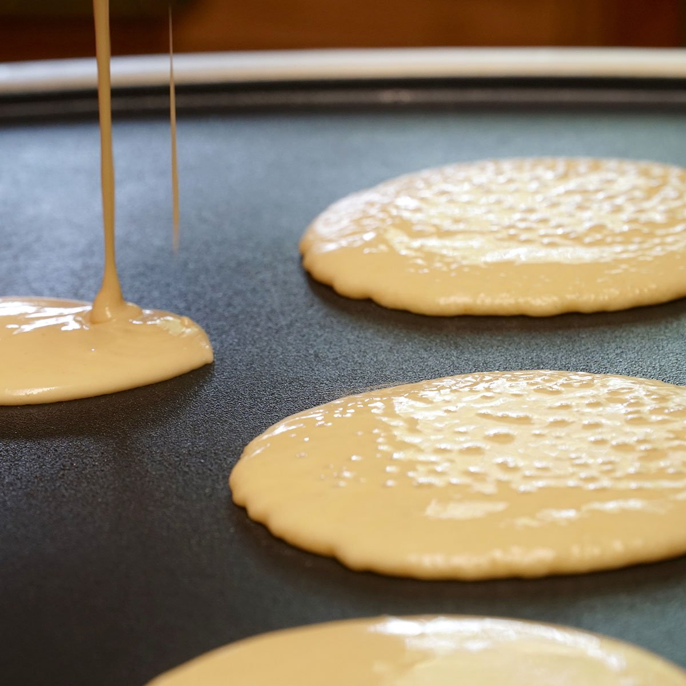

1. First, gather all kitchen supplies:
2. Preheat the frying pan on the grill on low temperature.
3. Get pancake mix, milk, and eggs.
4. Stir them together until there are no lumps present.
5. Dip the mix in the frying pan. The size of the pancake is optional.
6. Turn the frying pan at medium temperature.
7. To flip the pancake, make sure there are bubbles slowly popping all around the pancake. This means that the cooked side of the pancake has turned brown. If it has not turned brown, wait a couple more minutes.
8. After flipping the pancake, wait a few minutes until the otherside has turned brown.
9. Repeat steps 3-7 until the desired amount is achieved. Then serve and enjoy.
Honestly, Anna and I had no problems working on the assignment once we were writing the instructions for JavaScript. However, I was having a little difficulty converting the pseudocode into comments for the instructions. Once I save the file as a JavaScript, the file did not accept it as there were no changes. When I looked back at the instructions on iLearn, I saved the file with the ".js" extension which worked the document. I transfered it to the lab html file and used the "pre" attribute tag code to work.
The images do not seem to work unlike the previous lab assignment. Their folder locations were in the right spot, entered in the right source directory, and having the title all lowercase letters. But it is not opening the images on the browser window and needs to be checked on how it needs to be fixed.
// 1. First, gather all kitchen supplies: Wooden spoon or whisk, spatuala, a big bowl, and a frying pan. // 2. Preheat the frying pan on the grill on low temperature. // 3. Get pancake mix, milk, and eggs. // 4. Stir them together until there are no lumps present. // 5. Dip the mix in the frying pan. The size of the pancake is optional. // 6. Turn the frying pan at medium temperature. // 7. To flip the pancake, make sure there are bubbles slowly popping all around the pancake first. This means that the cooked side of the pancake has turned brown. If it has not turned brown, wait a couple more minutes. // 8. After flipping the pancake, wait a few minutes until the otherside has turned brown. // 9. Repeat steps 3-7 until the desired amount is achieved. Then serve and enjoy.